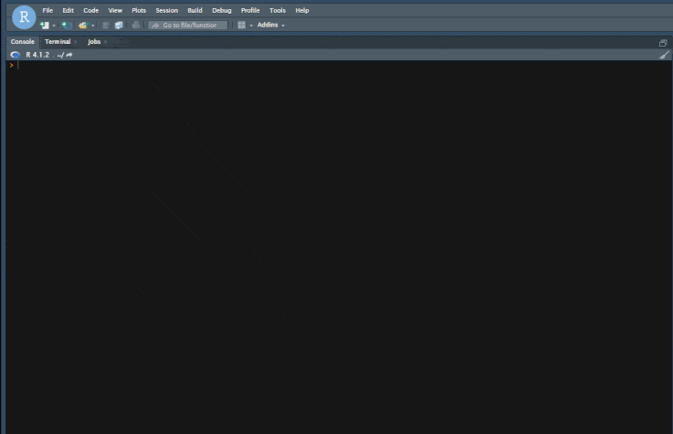
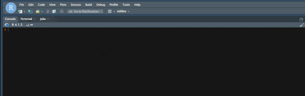
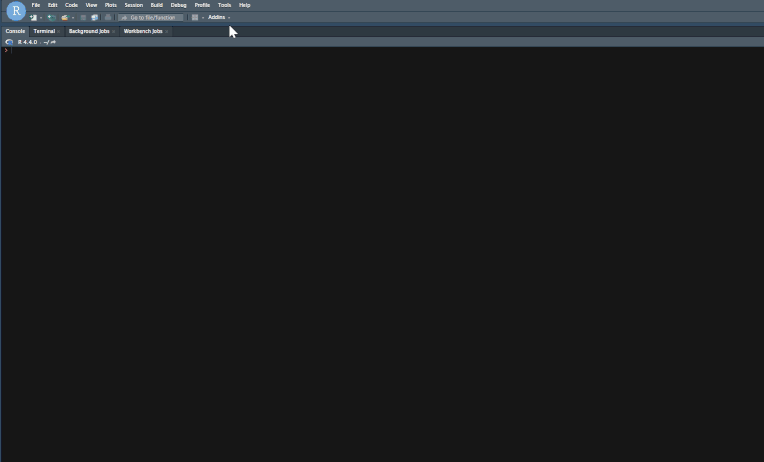
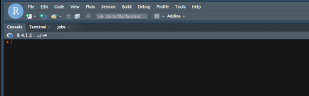
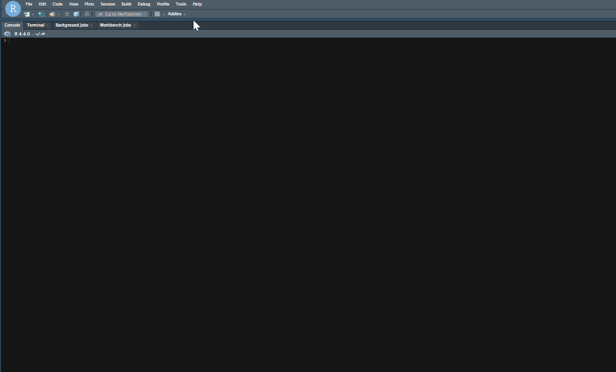
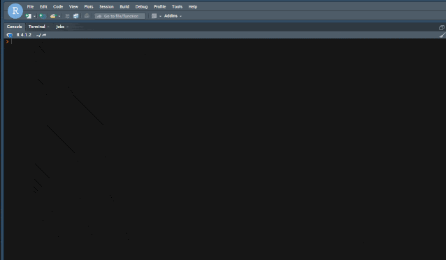
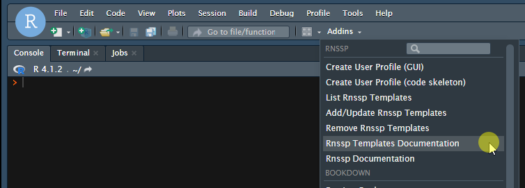

Create a User Profile with the GUI
Users may create and save a profile via the Create User Profile (GUI) addin menu as shown below:

Or in the R console:
Rnssp:::create_user_profile_gui()Generate a Skeleton to create a User Profile
Alternatively, users may generate a code skeleton in the R console from the Create User Profile (code skeleton) addin as demonstrated below:

Or in the R console:
Rnssp:::create_user_profile()Run Rnssp shiny apps
Rnssp Shiny Apps are custom-built applications for the
Rnssp community of users, providing on-demand tools to
enhance user experiences and streamline workflows.
Starting from Rnssp v0.3.0, RStudio users may run Rnssp
shiny apps via Rnssp Addins:

Or in the R console:
Rnssp:::run_app_gui()Listing Available Rnssp templates
Users may check the list of all the currently available Rnssp R Markdown templates with the List Rnssp Templates addin:

Or in the R console:
Rnssp:::list_templates()Add/Update Rnssp Templates
A unique feature of the Rnssp package is the ability to
add R Markdown templates dynamically to an existing installation of the
package. The National Syndromic Surveillance Program (NSSP), in
collaboration with its Community of Practice (CoP), develops various R
Markdown templates which can be dynamically added or updated via with
the Add/Update Rnssp Templates addin:

Or in the R console:
Rnssp:::add_rmd_template_gui()Remove Rnssp Templates
When one or more Rnssp templates are no longer needed, they can be removed via the Remove Rnssp Templates addin:

Or in the R console:
Rnssp:::remove_rmd_template_gui()Accessing Package and Templates Documentations
The Rnssp Templates Documentation and the Rnssp Documentation addins are provided to allow users to easily access respectively, the Rnssp R Markdown templates and the Rnssp package online documentation.
Rnssp R Markdown Templates Documentation Addin

Or in the R console:
Rnssp:::rnssp_templates_manual()